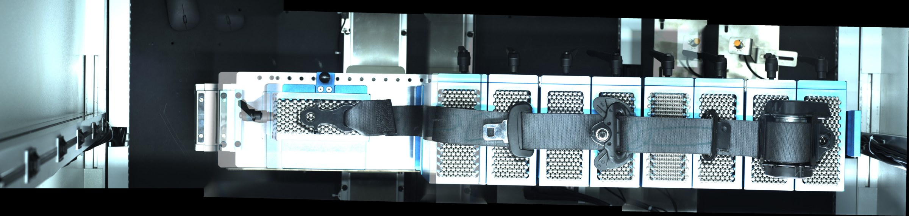

Lab7 通用实现
纯 Python / OpenCV，实现柱面投影、SIFT + RANSAC、ECC 精化、接缝式与线性羽化融合，并支持中文路径。
panorama_stitch.py →面向课程实验与工业检测的多相机图像拼接项目。从柱面投影、特征配准到加权融合，并提供型号A 顶面四相机实测结果与 C# 异步集成方案。

实际排列：TopCam4 → TopCam3 → TopCam2 → TopCam1。点击预览查看完整结果；匹配数据和接缝分析见拼接报告。
纯 Python / OpenCV，实现柱面投影、SIFT + RANSAC、ECC 精化、接缝式与线性羽化融合，并支持中文路径。
panorama_stitch.py →针对低纹理和重复工装纹理加入 CLAHE、多区域候选及 ECC 选优，输出全景、匹配可视化和统计信息。
stitch_topcam.py →.NET Framework 4.8 + OpenCvSharp，以命名管道和 protobuf 接收任务；后台处理，不阻塞检测与 PLC 通信。
PanoramaStitcher.cs →Lab7 流程在配准前增加柱面投影。C# 工作进程针对重复纹理增加灰度模板相关搜索兜底，并跟踪后台任务状态。
安装 uv 后，无需手动创建 Python 环境：
# 型号A 顶面四相机（默认 0.5 尺度）
cd 全景图像拼接/型号A_20261118_185337_712/stitch
uv run --no-project --with opencv-python --with numpy python stitch_topcam.py
# Lab7 指定数据集；目录内需包含图片与 K.txt
cd 全景图像拼接
uv run --with opencv-python --with numpy python panorama_stitch.py --data <数据目录> --out <输出.png>更完整的目录说明、参数与集成细节请阅读 README.md。
现场方案针对近平面检测面优化。不同深度的物体可能因视差错位；弱纹理、重复纹理和重叠不足会降低配准稳定性。当前 TopCam 流程未做亮度增益补偿，部分接缝仍可能存在亮度跳变。